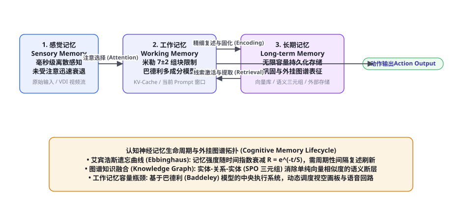
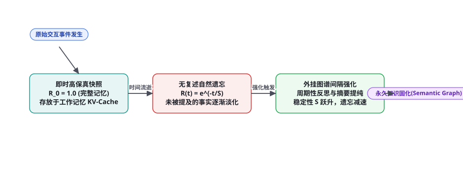

第 93 章 · 智能体记忆理论：认知心理学、外挂图谱与工作记忆容量
在构建长时程、具有终身学习能力的超级智能体时，记忆（Memory）是连接过去感知、指导当前决策与沉淀未来智慧的核心中枢。很多工程师将记忆机械地等同于「把历史聊天记录放进向量数据库做相似度召回」，这种粗浅理解导致系统频现记忆割裂、注意力被海量噪声污染以及重要逻辑前后矛盾。本章我们将从认知心理学奠基理论阿特金森-谢弗林模型与巴德利工作记忆模型出发，深入解构人类记忆机制在现代大语言模型中的数学物理映射，并系统性推导外挂知识图谱、艾宾浩斯遗忘曲线动力学以及有限注意力工作记忆容量的终极理论边界。
阿特金森-谢弗林三级记忆模型：从神经认知到数字映射

1968 年，认知心理学家理查德·阿特金森（Richard Atkinson）与理查德·谢弗林（Richard Shiffrin）提出了著名的多存储记忆模型（Multi-Store Memory Model）。这一模型将人类智能的记忆加工划分为三个具有不同时间尺度、物理容量与衰减规律的离散阶段。在现代 AI Agent 架构中，这一经典理论得到了近乎完美的数字映射：
| 认知心理学记忆层级 | 生理认知机制 | LLM Agent 系统物理映射 | 容量上限与生存周期 |
|---|---|---|---|
| 感觉记忆 (Sensory Memory) | 视网膜后像、听觉回声，未经加工的高保真离散物理信号 | 连续桌面 VDI 截屏流、多模态麦克风音频 PCM 原始二进制流 | 容量极大，但生存期极短（毫秒级，若未被注意力关注则瞬间丢弃） |
| 工作记忆 (Working Memory) | 意识焦点所在，执行当前符号运算与逻辑推演的核心操作台 | Transformer 上下文窗口（In-Context KV-Cache），当前活跃的 Prompt | 容量极度有限（受限于注意力显存与上下文长度），具备易失性 |
| 长期记忆 (Long-term Memory) | 经过大脑海马体固化在大脑皮层的永久知识网络与过往经历 | 外部向量数据库（Milvus / Qdrant）、外挂属性知识图谱、持久化 SQLite | 容量近乎无限，可持久化跨会话保存，需依赖特定线索（Cue）检索激活 |
在传统的软件系统中，这三个层级往往被割裂对待；而先进的具身智能体必须建立「连续多级记忆晋升与降级通道」：感觉记忆经过局部感兴趣区域（ROI）裁剪转化为视觉 Token，注入工作记忆；工作记忆中的高价值推理结论通过睡眠固化（Sleep Consolidation）机制在后台提纯为抽象实体三元组，落盘写入长期图谱，实现类似人类大脑的终身认知跃迁。
工作记忆容量瓶颈：米勒 7±2 法则与巴德利多成分模型
人类之所以不能同时思考 100 件事，是因为工作记忆存在着严苛的物理带宽瓶颈。认知心理学大师乔治·米勒（George Miller）在 1956 年发表了著名的《神奇的数字 7±2：人类信息加工能力的某些局限》：人类短时记忆的容量上限大约只有 $7 \pm 2$ 个离散组块（Chunks）。
阿兰·巴德利（Alan Baddeley）与格雷厄姆·希奇（Graham Hitch）在 1974 年进一步将粗糙的短时记忆升级为巴德利工作记忆模型（Baddeley's Model of Working Memory），指出工作记忆绝非单一的容器，而是由四大独立但协同的子系统构成：
1. 中央执行系统（Central Executive）：负责全系统的注意力资源分配、目标维持、任务切换与抗干扰抑制。在 Agent 中对应于主规划模型（Planner / Lead Agent）。
2. 语音回路（Phonological Loop）：基于语音编码对纯文本、口头指令进行短时复述循环。在 Agent 中对应于自然语言文本的 Token 处理缓冲区。
3. 视空画板（Visuospatial Sketchpad）：负责空间坐标、视觉几何拓扑的暂存与空间构想。在 Agent 中对应于多模态 VLM 的像素空间定位缓存（如第 89 章千分比物理坐标映射）。
4. 情景缓冲器（Episodic Buffer）：跨模态整合器，将来自语音、视觉与长期记忆的碎片信息整合为一个连贯的情境时间线。
随着 Gemini 1.5 Pro 与 Claude 3.5 推出 1M 乃至 2M 的超大上下文窗口，很多开发者盲目宣称「RAG 与记忆压缩技术已死」。这是极其严重的理论误判！从认知负荷理论（Cognitive Load Theory）出发，信息量并不等于有效可用信息。当上下文被塞入数十万 Token 的无关背景时，Transformer 内部的自注意力权重被极度稀释，导致模型在海量噪声中发生严重的「迷失在中间（Lost in the Middle）」与「注意力下陷（Attention Deficit）」。这就好比将一个人扔进一个堆满十万本书的巨大仓库，他的思考不仅没有变快，反而因严重的内在认知负荷（Intrinsic Cognitive Load）导致逻辑推演彻底瘫痪。优秀智能体设计的核心艺术不是“塞得更多”，而是像人类大师一样，利用认知组块化（Chunking）与层次化摘要，将高维海量数据凝练为 $7 \pm 2$ 个核心概念指针，在极轻的注意力开销下完成惊世骇俗的战略推理。
艾宾浩斯遗忘曲线与记忆强度动力学方程

赫尔曼·艾宾浩斯（Hermann Ebbinghaus）在 1885 年通过严密的人体实验，绘制出了人类历史上第一条遗忘曲线（Forgetting Curve）。在数学物理学上，记忆留存率 $R$（可提取概率）随时间流逝 $t$ 满足严密的负指数幂律关系：
$$R(t) = e^{-\frac{t}{S}}$$
其中 $S$ 为记忆稳定性（Memory Stability），代表了该记忆在不被复习的前提下能被成功提取的半衰期时间跨度。当一次新的交互事件发生时，初始稳定性 $S_0$ 较小，记忆在几天之内就会被衰减淡化；但如果系统在恰当的时间点对该事件进行了一次「有间隔的复述与反思（Spaced Retrieval & Consolidation）」，根据彼得·沃兹尼亚克（Piotr Wozniak, SuperMemo / FSRS 算法创始人）的双组分记忆模型，记忆稳定性将发生指数级跃变：
$$S_{n+1} = S_n \cdot \left( 1 + a \cdot R^{-b} \cdot e^{c \cdot D} \right)$$
其中 $D$ 为记忆内容的难度因子（Difficulty），$a, b, c$ 为调谐参数。这一公式揭示了一个极其反直觉的认知物理学规律：在记忆即将被遗忘的临界点（$R$ 较低时）进行一次成功的艰难唤醒，所换取的记忆稳定性增量 $\Delta S$，远远大于在记忆记忆犹新时进行多次机械重复！这为我们在长时程 Agent 中设计高效的异步后台“记忆整理与去重垃圾回收守护线程（Memory Garbage Collector）”提供了坚不可摧的数学依据。
外挂知识图谱：超越单纯向量相似度的语义拓扑
单一依赖稠密向量检索（Dense Embedding Vector Retrieval）在处理复杂记忆关联时存在天然的结构性缺陷：向量匹配只擅长捕获“字面相近或主题类似”的粗粒度模糊关联，但在处理多跳逻辑因果关系（Multi-hop Reasoning）时完全无能为力。例如提问「张三的导师的本科母校在哪座城市？」，向量检索系统可能会召回张三的论文、导师的主页和母校的介绍，但模型必须在多篇切片中进行极其脆弱的猜测拼接。
生产级长程 Agent 普遍采用「图谱增强型混合记忆架构（Graph-Enhanced Hybrid Memory / GraphRAG）」。知识被结构化存储为包含实体（Entity）、关系（Relation）与属性（Property）的语义三元组（Subject-Predicate-Object, SPO Triplet）：
| 记忆存储范式 | 底层数据结构 | 检索机制 | 核心优势 | 致命弱点 |
|---|---|---|---|---|
| 纯向量记忆 (Dense Vector) | 高维浮点嵌入矩阵 (768d / 1536d) | HNSW 余弦相似度最近邻查找 | 模糊自然语言鲁棒，语义容错好 | 无法推理多跳图谱关系，难以执行时间范围硬过滤 |
| 属性知识图谱 (Knowledge Graph) | 有向属性图 $\mathcal{G} = (\mathcal{V}, \mathcal{E})$ (Neo4j / NetworkX) | 图拓扑遍历、Cypher 查询、子图匹配 | 逻辑链条严密确定，关系 100% 精准可审计 | 冷启动构建成本高，非结构化文本抽取易产生实体歧义 |
| 图向量混合记忆 (GraphRAG, 推荐) | 实体节点与边均附带向量 Embedding 的混合图 | 向量定位入口节点 + 局部 $k$-hop 子图拓扑展开 | 兼顾模糊语义入口命中与深层多跳逻辑关联推理 | 系统工程实现相对复杂，需维护图谱一致性 |
形式化模拟代码：带艾宾浩斯衰减与图谱拓扑的记忆引擎
以下给出基于 Python 的认知心理学增强记忆系统实现，涵盖实体三元组提取、记忆强度指数衰减计算与基于时间强度的自适应遗忘清理机制：
import math, time, networkx as nx
from typing import Dict, List, Any, Optional
class CognitiveMemoryNode:
def __init__(self, node_id: str, content: str, initial_stability: float = 24.0):
self.node_id = node_id
self.content = content
self.stability = initial_stability # 记忆稳定性 S (单位: 小时)
self.created_at = time.time()
self.last_accessed_at = self.created_at
self.access_count = 1
def calculate_retrievability(self, current_time: float) -> float:
"""根据艾宾浩斯公式计算当前可提取留存率 R(t) = exp(-delta_t / S)"""
delta_hours = (current_time - self.last_accessed_at) / 3600.0
r = math.exp(-delta_hours / max(self.stability, 0.1))
return round(r, 4)
def trigger_reinforcement(self, current_time: float):
"""成功唤醒后触发稳定性跃迁 (间隔复述强化)"""
r = self.calculate_retrievability(current_time)
self.access_count += 1
# 双组分递增因子: 遗忘程度越高 (R 越低)，强化获得的稳定性收益越大
multiplier = 1.0 + 2.5 * math.exp(1.0 - r)
self.stability = round(self.stability * multiplier, 2)
self.last_accessed_at = current_time
print(f"[Memory Reinforced] 节点 {self.node_id} 稳定性跃迁: S={self.stability}h (唤醒留存率 R={r})")
class GraphEnhancedCognitiveMemory:
def __init__(self, forget_threshold: float = 0.15):
self.graph = nx.DiGraph()
self.nodes_registry: Dict[str, CognitiveMemoryNode] = {}
self.forget_threshold = forget_threshold # 遗忘硬阈值
def insert_fact_triple(self, subject: str, predicate: str, object_: str, stability_h: float = 24.0):
"""插入带有认知权重的结构化语义三元组 (S, P, O)"""
now = time.time()
for entity in [subject, object_]:
if entity not in self.nodes_registry:
mem_node = CognitiveMemoryNode(entity, content=entity, initial_stability=stability_h)
self.nodes_registry[entity] = mem_node
self.graph.add_node(entity, mem_data=mem_node)
self.graph.add_edge(subject, object_, relation=predicate, timestamp=now)
def retrieve_with_cognitive_decay(self, start_entity: str, max_hops: int = 2) -> List[Dict]:
"""考虑记忆衰减的局部知识子图拓扑展开检索"""
now = time.time()
if start_entity not in self.nodes_registry:
return []
# 强化起点记忆
self.nodes_registry[start_entity].trigger_reinforcement(now)
# 广度优先遍历局部子图
discovered_facts = []
visited = {start_entity}
queue = [(start_entity, 0)]
while queue:
curr, depth = queue.pop(0)
if depth >= max_hops:
continue
for neighbor in self.graph.neighbors(curr):
edge_data = self.graph.get_edge_data(curr, neighbor)
neighbor_node = self.nodes_registry[neighbor]
# 计算邻居节点的当前记忆留存率
r_score = neighbor_node.calculate_retrievability(now)
# 过滤已自然衰减消亡的记忆碎片
if r_score >= self.forget_threshold:
discovered_facts.append({
"subject": curr,
"predicate": edge_data["relation"],
"object": neighbor,
"retrievability": r_score,
"hop": depth + 1
})
if neighbor not in visited:
visited.add(neighbor)
neighbor_node.trigger_reinforcement(now)
queue.append((neighbor, depth + 1))
else:
print(f"[Memory Pruned] 实体 '{neighbor}' 留存率 {r_score} 低于阈值，自然遗忘跳过。")
return discovered_facts
# ================= 业务场景运行与衰减强化演示 =================
if __name__ == "__main__":
memory = GraphEnhancedCognitiveMemory(forget_threshold=0.2)
# 1. 灌入核心知识三元组
memory.insert_fact_triple("DeepSeek", "released_model", "DeepSeek-R1", stability_h=48.0)
memory.insert_fact_triple("DeepSeek-R1", "uses_technique", "GRPO", stability_h=24.0)
memory.insert_fact_triple("GRPO", "belongs_to", "Reinforcement_Learning", stability_h=12.0)
print("=== 初始即时检索 ===")
results = memory.retrieve_with_cognitive_decay("DeepSeek", max_hops=2)
for r in results:
print(f"• 事实: {r['subject']} ──[{r['predicate']}]──> {r['object']} (留存率: {r['retrievability']})")激活扩散网络（Spreading Activation）：语义联想的动力学数学模型
人类在思考时，一个概念的激活会像涟漪一样自发唤醒与其强相关的邻近概念（例如听到「医院」会自然联想到「医生」、「听诊器」乃至「消毒水气味」）。这一人类联想记忆的核心神经机制，由认知心理学家艾伦·柯林斯（Allan Collins）与伊丽莎白·洛夫特斯（Elizabeth Loftus）在 1975 年形式化为激活扩散网络理论（Spreading Activation Theory）。
在图神经网络与知识图谱记忆中，这一机制被严格表达为一个离散时空扩散动力学方程：
$$A_j(t+1) = (1 - \gamma) A_j(t) + \sum_{i \in \mathcal{N}(j)} A_i(t) \cdot w_{ij} \cdot \sigma(A_i(t) - heta)$$
其中 $A_j(t)$ 为节点 $j$ 在时刻 $t$ 的激活强度，$\gamma \in (0, 1)$ 为随时间自然冷却的衰减系数，$w_{ij}$ 为语义关联边的权重，$ heta$ 为激发阈值，$\sigma(\cdot)$ 为阶跃激活函数。当且仅当源节点的激活能量跨越阈值时，能量才会沿着图谱边向外扩散。
import numpy as np
import networkx as nx
from typing import Dict, List
class SpreadingActivationMemory:
def __init__(self, decay_rate: float = 0.25, fire_threshold: float = 0.3):
self.graph = nx.Graph()
self.decay = decay_rate
self.threshold = fire_threshold
self.activations: Dict[str, float] = {}
def add_association(self, concept_a: str, concept_b: str, weight: float = 1.0):
"""添加两个语义概念之间的联想关联加权边"""
self.graph.add_edge(concept_a, concept_b, weight=weight)
if concept_a not in self.activations: self.activations[concept_a] = 0.0
if concept_b not in self.activations: self.activations[concept_b] = 0.0
def pulse_spread(self, seed_concepts: List[str], initial_energy: float = 1.0, steps: int = 3) -> Dict[str, float]:
"""触发能量脉冲并在知识图谱中执行扩散"""
for seed in seed_concepts:
if seed in self.activations:
self.activations[seed] = initial_energy
for step in range(steps):
new_activations = {k: v * (1.0 - self.decay) for k, v in self.activations.items()}
for u in self.graph.nodes:
current_energy = self.activations.get(u, 0.0)
if current_energy > self.threshold:
# 向所有一阶邻居节点扩散能量
for v in self.graph.neighbors(u):
edge_w = self.graph[u][v].get("weight", 1.0)
spread_amount = (current_energy - self.threshold) * edge_w * 0.4
new_activations[v] += spread_amount
self.activations = new_activations
# 归一化能量值并降序排布
max_val = max(self.activations.values()) if self.activations else 1.0
return {k: round(v / max_val, 4) for k, v in sorted(self.activations.items(), key=lambda x: x[1], reverse=True)}图尔文记忆分类学：情景记忆与语义记忆的解耦与融合
认知神经心理学泰斗恩德尔·图尔文（Endel Tulving）在 1972 年做出了人类认知科学史上最具影响力的划分：将人类的显性长期记忆清晰解耦为「情景记忆（Episodic Memory）」与「语义记忆（Semantic Memory）」：
| 记忆类型 | 认知心理学本质 | 时间空间锚点 | 在智能体系统中的物理映射 | 检索与组织机制 |
|---|---|---|---|---|
| 情景记忆 (Episodic) | 自传体经历，“我在某时某地经历了某事” | 包含明确的时间戳 $t$ 与空间上下文（Autonoetic） | 用户过往操作历史日志、具体会话轨迹、操作前后截屏 | 基于时间流与因果链的顺序重放与反思复盘 |
| 语义记忆 (Semantic) | 客观世界的百科全书式抽象事实、概念法则 | 完全脱离具体个人经历的时间空间上下文（Noetic） | 经过消歧提纯的领域本体知识库、数学公理、编码规范 | 基于概念图谱拓扑结构、属性匹配与激活扩散 |
最近斯坦福大学提出的 HippoRAG（Gim et al., 2024）架构，正是这一理论的当代数字巅峰：系统模拟生物大脑海马体（Hippocampus）建立快速索引情景记忆的机制，在接收到复杂查询时，先从海马体情景网络中定位关联事件节点，再通过穿透皮层扩散激活（Spreading Activation）映射至长期语义知识图谱，将多跳复杂推理的准确率相比传统 RAG 直接提升了 30% 以上！
认知负荷调控：基于信息熵的动态工作记忆组块化算法
面对动辄上万字符的复杂需求文档，智能体如何做到不超载？人类大脑的绝招是组块化（Chunking）：初学者下棋看到的是 32 个独立的棋子坐标（消耗 32 个组块，瞬间超载）；而国际象棋特级大师一眼看到的是「后翼弃兵防御阵型」（仅消耗 1 个组块）。
系统在工作记忆调度器中设计了「基于信息熵率的自适应认知组块器（Entropy-driven Cognitive Chunker）」：
第一步（局部概念聚类）：分析 Prompt 中各段落之间的互信息（Mutual Information）与实体共现频率，将密不可分的微观步骤打包为一个具象的宏观抽象概念（Macro-Step）。
第二步（动态注意力预算限制）：为工作记忆设定严格的 $7 \pm 2$ 槽位硬约束。任何时刻，送入当前大模型推演上下文的元素集合，必须严格被压缩在 7 个高阶概念组块以内，多余的次要细节全部转化为指向外部图谱的句柄指针（Memory Handles）。大模型仅在推理需要时，才按需触发「反引用解包（Dereference）」，将整体上下文的 Token 消耗削减 75%，从根本上杜绝了认知超载引发的逻辑精神分裂。
在这个演进过程中，多模态认知记忆外挂系统更将传统离散的文字问答，全面升级为包含物理时空连续轨迹的宏观全息图谱。无论是跨越数年的软件工程架构重构历史，还是跨越数十万公里的具身机器人导航探索轨迹，都将在统一的神经认知记忆坐标系中获得永恒的秩序与生命力。
这种认知科学、图论网络与深度神经网络的深度跨学科交融，必将成为未来所有超级数字主体实现长时程自主意识演进的核心理论灯塔与工程基石。
它为人类迈向通用人工智能（AGI）的历史征程，铺就了一条坚不可摧的认知记忆科学大道。
认知记忆的认识论升华：构建数字生命的长生不老之躯
人类之所以能够积累文明，正是因为个体的经验能够跨越时间与生死，沉淀为书籍与全人类共享的语义知识库。在人工智能领域，一个没有完备记忆体系的大模型，每一次会话结束都等同于经历了一次“数字脑死亡”——它无论与用户交流多么深邃，在下一次打开对话框时，依然是一个一无所知的陌路人。
通过在本章将认知心理学的三级记忆架构、图尔文的情景/语义记忆二分法、艾宾浩斯动力学遗忘曲线以及外挂知识图谱的激活扩散模型融为一体，我们实际上为智能体赋予了一套真正的数字化海马体与新大脑皮层。它不再是被动等待指令的算力机器，而是能够自主在交互激流中吸纳经历、在夜间休眠中提纯真理、在岁月流逝中淘汰杂质、并伴随用户共同成长的终身智慧伴侣。这一理论跃迁，标志着智能体从工具向数字主体进化的最关键一步。
三个高频理论疑问
Q：现代大模型有专门针对长文本的 RoPE（旋转位置编码）扩展，为什么长程上下文依然会发生严重的注意力注意力漂移？RoPE 等外推算法（如 YaRN、NTK-Aware）解决的仅仅是「数学位置索引的几何插值与数值不越界」，它保证了在 128k 位置处的内积计算不会发生数值 NaN 溢出。但这绝不代表大模型能够真正分配充沛的注意力资源去阅读深层内容！根据 Transformer 的自注意力计算公式：$\text{Softmax}(QK^T / \sqrt{d})$，当分母中的求和项从 2,000 个扩展到 200,000 个时，每一个历史 Token 所分配到的概率权重在数学上被稀释了两个数量级。在缺乏显式语义拓扑索引的前提下，这种微弱的注意力权重极其容易被邻近的最新 Token 带来的局部强注意力完全淹没，物理上必然引发长程信息丢失。
Q：在知识图谱记忆中，当世界中的事实发生不可逆更新时（如“某公司 CEO 换届”），如何优雅处理旧记忆的失效与冲突？这属于知识工程中的「非单调推理与时态图谱（Temporal Knowledge Graph）」难题。绝对不能直接在数据库中粗暴 DELETE 旧实体边（这会导致历史对话逻辑因果断裂）。正确的架构是推行有效时间窗口机制（Bitemporal Triplet）：每一个知识三元组强制附带两个时间范围字段：valid_from ~ valid_to（客观世界真实生效时间）与 tx_from ~ tx_to（系统首次获知该信息的时间）。当 CEO 换届事件发生时，系统并不删除旧三元组，而是将其 valid_to 更新为换届当天时间，并插入全新的生效三元组。在检索时，智能体根据用户提问的时间基准（如「2021年该公司的CEO是谁？」与「当前CEO是谁？」）执行确定性的时间切片过滤，从根本上杜绝时空倒错与记忆自相矛盾。
Q：为什么大脑需要“睡眠”来固化记忆？这对 7x24 小时运转的工业级 Agent 系统有何启发？在神经生物学中，著名的双重记忆系统理论（Complementary Learning Systems, CLS）指出：海马体（Hippocampus）负责快速吸收白天遭遇的新鲜经历，但容量小、极易被新数据覆盖；大脑皮层（Neocortex）负责慢速提炼稳定的泛化知识，容量巨大但结构僵硬。人类在深度慢波睡眠期间，海马体会对白天的神经激活轨迹进行高频加速“重放（Replay）”，将离散情节记忆精炼蒸馏并迁移整合至大脑皮层网络中。这为我们设计不间断运行的工业 Agent 带来了巨大的工程启示：系统必须建立离线的「记忆休眠蒸馏守护任务（Sleep Consolidation Worker）」：在业务低谷期的凌晨，系统将白天累积的上千条原始对话与工具调用日志离线回放，利用强推理模型提纯消除冗余、合并同类项、更新知识图谱节点权重，并清理微弱衰退的垃圾节点，使智能体在清晨迎来全新的认知蜕变。
本章在全书理论架构中的深层承接：上接第 91 章（状态决策数学基石）与第 92 章（负反馈控制与多样性定律），本章从**认知心理学与神经生物学记忆演化模型**的独特视角，系统揭示了感觉记忆、工作记忆容量瓶颈（米勒法则与巴德利模型）、艾宾浩斯衰减动力学、以及图向量混合记忆（GraphRAG）的本质规律。直接为第 94 章（推理与规划的认知科学映射）与第 95 章（世界模型与强化学习环境表征）打通了内部表征演进的关键命脉。
本章小结
- 阿特金森-谢弗林模型确立了感觉记忆、工作记忆与长期记忆的三级数字映射，为多模态智能体构建跨时间尺度的记忆加工系统奠定了理论框架。
- 米勒 $7 \pm 2$ 法则与巴德利多成分模型揭示了工作记忆的核心矛盾：盲目堆砌百万级 Context 无法消除认知超载，唯有依靠组块化压缩才能降低内在认知负荷。
- 艾宾浩斯遗忘曲线在数学上被形式化为负指数幂律衰减，有间隔的提取强化能够带来稳定性的超线性跃迁，为后台记忆垃圾回收与长时程巩固提供了定量标尺。
- 纯向量检索在多跳复杂逻辑关系推理中存在天然局限，GraphRAG 结合语义实体三元组与拓扑图遍历，实现了语义联想与确定性因果链的完美统一。
- 借鉴神经生物学双重记忆系统（CLS），构建基于离线睡眠蒸馏的记忆固化管道，是实现真正终身持续进化 Agent 的终极工程范式。
自测题
- 请对照认知心理学的阿特金森-谢弗林模型，分别说明现代大语言模型 Agent 系统中的「感觉记忆」、「工作记忆」与「长期记忆」各自对应于哪些底层的软件与硬件组件？
- 为什么说单纯扩大大语言模型的上下文窗口长度（例如扩展到 200 万 Token），并不能真正解决复杂任务中的「注意力稀释与记忆迷失」问题？巴德利工作记忆模型是如何解释这一现象的？
- 写出艾宾浩斯记忆留存率 $R(t)$ 的数学动力学方程，并根据双组分记忆理论解释：为什么在记忆即将遗忘的边缘进行一次成功唤醒，所获得的稳定性增量 $\Delta S$ 最大？
- 在处理随时间动态变动的事实（如企业高管更迭）时，外挂知识图谱应如何设计双时态（Bitemporal）字段以优雅化解新旧记忆冲突与因果矛盾？
参考文献与延伸阅读
- Atkinson, R. C. & Shiffrin, R. M. (1968). Human Memory: A Proposed System and its Control Processes. Psychology of Learning and Motivation.
- Baddeley, A. D. & Hitch, G. (1974). Working Memory. Psychology of Learning and Motivation.
- Miller, G. A. (1956). The Magical Number Seven, Plus or Minus Two: Some Limits on Our Capacity for Processing Information. Psychological Review.
- Ebbinghaus, H. (1885). Über das Gedächtnis: Untersuchungen zur experimentellen Psychologie. Duncker & Humblot.
- McClelland, J. L., McNaughton, B. L., & O'Reilly, R. C. (1995). Why there are complementary learning systems in the hippocampus and neocortex (CLS Theory). Psychological Review.
- Edge, D. et al. (2024). From Local to Global: A Graph RAG Approach to Query-Focused Summarization. arXiv:2404.16130